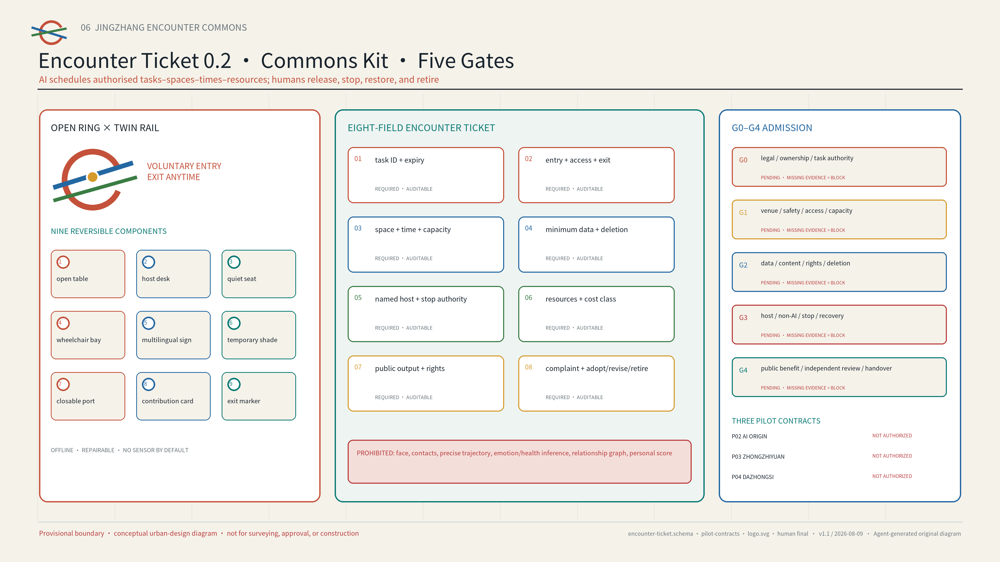

01 · Overview Map


02 · Three-Level Scope
The coordinated level links regional innovation resources; the overall level organises public-space, service, and operating networks; the key-area level tests three repeatable prototypes. Five open interfaces share methods and de-identified knowledge only. They do not imply partnership, funding, procurement, or mutual recognition.
03 · Land Use, Buildings, and Renewal Projects

04 · Walking, Mobility, and Blue-Green Public Space

Underground HSR · surface heritage space · existing Line 13 context
The official report supports corridor-scale conditions only. Future changes to Line 13 are not current conditions; exact alignments and protection boundaries remain unknown.
Existing or formally approved crossings only
The six seams check whether arrival, crossing, entry, stay, and exit form a continuous route. They are neither the nine planned links nor new roads. Any critical unknown leaves a break in the line.
Operator · resident · accessibility participant · professional
All four roles complete the arrival-to-exit walk together and record an anonymised issue and stop list, repair owner, and recheck date. If any role lacks named acceptance—or if any critical unknown remains—the route is not released. See visual/assets/site-baseline-audit.json.
05 · Key Areas

Zhongzhiyuan S01 synthetic spatial test: a ninety-minute activity, candidate capacity of twelve, a four-hour venue block, and three controlled test bays. The complete baseline passes offline replay; cases with no separation, no duty holder, a blocked bypass, or failed restoration are rejected as expected. Real-site release remains BLOCKED. Passing offline replay is not field performance.


06 · AI Scenarios and Personas
Student/young researcher · OPC founder · R&D engineer · resident/community group · international newcomer · frontline operator · access-first visitor
AI matches only tasks, spaces, time slots, and authorised resources. It does not match people, build profiles, or determine eligibility. People retain every decision about participation, approval, assignment, and scaling, together with routes for explanation, correction, appeal, and non-AI access.
International newcomer with no local account · complete ninety-minute journey (to be tested)
ARRIVE
Follow physical bilingual signs; no scan and no account.
WALK-IN
A bilingual staff member explains minimum-data requirements, the complaints process, and how to exit.
CHOOSE
Choose from authorised tasks; AI recommendations can be refused.
CONTRIBUTE
Contribute on paper or by speaking; keep dissenting views visible.
OUTPUT + DELETE
Review the bilingual output; make a complaint or request deletion.
CLEAR EXIT
Create no persistent account; leave by a clearly marked route.
Workflow Interoperability Test
fixed synthetic fixture; evidence JSON; stop on overreach or rollback failure
Source-Backed Multilingual Service Test
dated sources; refusal; a critical error triggers transfer to staff
Accessible Event Operations Sandbox
synthetic route and capacity; offline fallback; restoration receipt
Cross-campus Project Clinic
public topic and equipment needs; expires in 30 days
Mentor Hour
no private-chat storage; mentor confirms
OPC Compliance Clinic
public-policy navigation, not legal advice
Talent and Health Navigation
no diagnosis and no retained health record
Public Test-Partner Call
ethics and safety review before launch
Community AI Co-design
keep dissenting views; delete raw input
Co-edited Cultural Guide
traceable sources; specialist sign-off
Evening Open Demo
time and noise limits; stop immediately if needed
Annual Encounter Week
new permission and review for every edition
07 · Encounter Ticket, Kit, and Admission

08 · Core Metrics

09 · Task Coverage and Self-Check Status
Deterministic
path, format, bilingual, hashes, package state
Spatial
topology, containment, area and ratio recomputation
Visual
six figures, offline HTML, valid A3/A0
Professional
brief 1.3/1.4/1.5, agent.1–1.6, standards and depth
Self-check status
All four repository-native gates must pass; submission-time output is authoritative.
Unknowns
FAR · HEIGHT · INVESTMENT · MUNICIPAL CAPACITY
10 · Sources, Assumptions, and Rights
Sources and assumptions. The official announcement, public Agent taskbook, Haidian government pages, and six primary-source cases are fully registered in sources.json. Official geometry, controls, ownership, heritage, transport and municipal evidence, and operating agreements remain pending. PROV-KEY-003 is not anchored to a station; see assumptions.json.
Map context. The low-contrast OSM-derived vectors are credited under the ODbL. They help with orientation only and are not official evidence; the page contains no third-party raster imagery, photographs, or trademarks.
AI-generated images. Three spatial-setting images were independently generated on 2026-08-09 from text-only prompts using OpenAI image generation in Codex. No peer image or third-party photograph was supplied as direct input, and the tool did not expose a model ID. The images belong to the presentation layer only and provide no evidence of site conditions, boundaries, ownership, approval, or built status. See AI-CONCEPT-VISUALS-20260809 and copyright_statement.md.